pub fn add_two(a: i32) -> i32 {
a + 2
}
#[cfg(test)]
mod tests {
use super::*;
use test::Bencher;
#[bench]
fn bench_add_two(b: &mut Bencher) {
b.iter(|| add_two(2));
}
}Consommation Énergétique
Stéphane Lopes <stephane.lopes@uvsq.fr>, Pablo de Oliveira Castro <pablo.oliveira@uvsq.fr>
Consommation énergétique des ordinateurs
Puissance et Énergie
Énergie: capacité d’un système à modifier un état en produisant un travail, exprimé en Joules \(J (N.m)\)
Puissance: débit d’énergie (énergie par unité de temps), exprimé en Watts \(W (J/s)\)
L’énergie est l’intégrale de la puissance sur le temps,
\(E = \int P(t).dt\)
Échelle d’énergies

Architecture générale d’un ordinateur
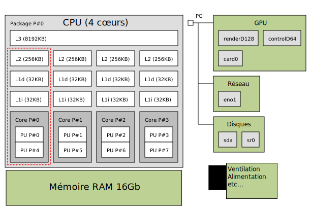
Zoom sur le CPU (Intel Nehalem)
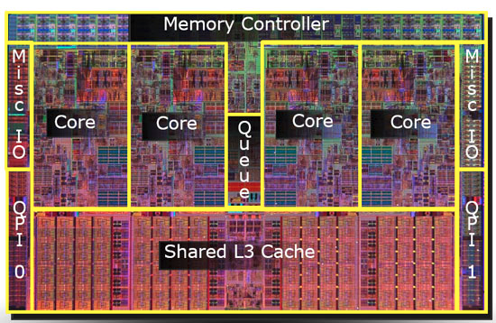
Les cœurs, les caches et la mémoire sont constitués à partir de millions de transistors qui implémentent des portes logiques.
L’architecture Nehalem comporte 731M de transistors et chaque porte fait 35nm.
Répartition du budget énergie
| Composant | Puissance [W] | % |
|---|---|---|
CPU | 80 | 31 |
RAM | 36 | 14 |
Disques | 12 | 5 |
Périphériques | 50 | 20 |
Carte mère | 25 | 10 |
Ventilateurs | 10 | 4 |
Fuites | 38 | 15 |
Total | 251 | 100 |
Source: A. Tisserand, ECOFAC 2010
Portes MOS
Les circuits logiques récents sont construits à partir de transistors MOS (Metal Oxyde Semiconductor).
Un transistor MOS possède trois broches: la source, le drain et la grille.
Il existe deux types de transistors MOS: le type P et le type N.
Lorsque l’on applique une tension sur la grille, le transistor devient soit passant (type N), soit bloquant (type P).
Consommation MOS
Les transistors MOS consomment en permanence lorsqu’ils sont passants.
Est-il possible de fabriquer des portes qui ne consomment que lors des changements d’état ?
Porte CMOS
Les portes logiques utilisent la technologie CMOS (Complementary Oxide Semiconductor) qui combine un P-MOS et un N-MOS.
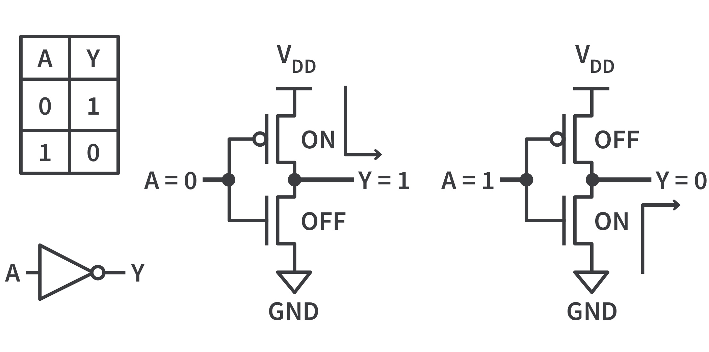
Par exemple, ici on implémente une porte logique NON: \(Y = \bar{A}\).
Lorsque l’entrée vaut 1, la porte NMOS (bas) est passante et la porte PMOS (haut) est bloquante, ainsi Y est relié à la masse (GND).
Avantage CMOS
Dans une porte CMOS, un des deux transistors est toujours bloquant et il n’y a (presque) pas de courant qui passe entre VDD et GND.
La consommation énergétique se produit donc uniquement lors des transitions d’état.
Puissance dynamique

Lors d’une transition la consommation d’une porte est \(P_{dyn} = \frac{1}{2}.C.V_{DD}^2.f\) où
\(C\) capacité de charge équivalente
\(V_{DD}\) tension
\(f\) fréquence des doubles-transitions (montantes + descendantes)
Amélioration des techniques de fabrication des CMOS
Dennard observe que à chaque nouvelle génération les transistors peuvent être réduits de ~30% (0.7)
Le voltage diminue de 30% car l’épaisseur diminue
La capacitance diminue de 30% car l’épaisseur diminue
Le temps de propagation diminue de 30% car la distance diminue
La surface diminue de 50% (\(0.7 \times 0.7\))
Cela entraine:
Une augmentation de la fréquence de 50% (car inverse du temps de propagation)
Une diminution de 50% de la consommation énergétique d’une porte
\(\Delta P = \Delta C.\Delta V_{DD}^2.\Delta f = 0.7\times 0.7^2 \times \frac{1}{0.7} \approx 0.5\)
La dissipation thermique par unité de surface reste constante.
Mais à chaque génération les CPUs deviennent plus complexes. Moore, 1966: Le nombre de transistors double tous les 1.5 ans à coûts constants.
Puissance statique
La technologie CMOS est bloquante sauf lors de transitions. Mais un faible courant de fuite \(I_{fuite}\) traverse un transistor bloquant.
\(P_{sta} = V_{DD}.I_{fuite}\)
\(I_{fuite}\) dépends de la température dissipée et du voltage seuil sur les transistors.
\(P_{sta}\) augmente exponentiellement (Borkar et Chien, 2011) avec la miniaturisation et met un frein à la loi de Moore.
Fin de la loi de Dennard
Avec l’augmentation des courants de fuite, la dissipation thermique par unité de surface augmente
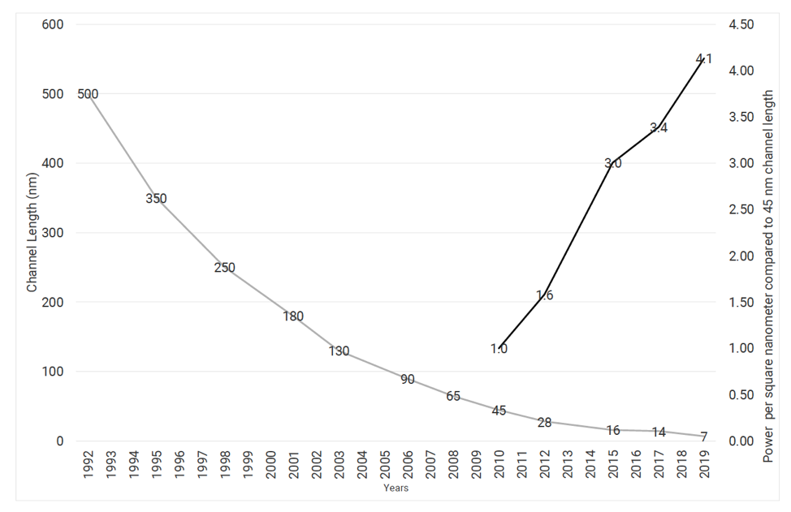
Avec la miniaturisation, on a aussi une limite sur l’augmentation de fréquence et une limite sur la réduction du voltage de seuil.
Limites sur la conception des processeurs
\(P = P_{dyn} + P_{sta} = \frac{1}{2}.C.V_{DD}^2.f + V_{DD}.I_{fuite}\)
Jusqu’aux années 2000, pour augmenter les capacités de calcul les constructeurs ont augmenté la fréquence et le nombre de processeurs.
Avec l’augmentation des courants de fuite, la dissipation énergétique devient trop importante.
Dorénavant pour augmenter les capacités de calcul, on multiplie le nombre de cœurs.
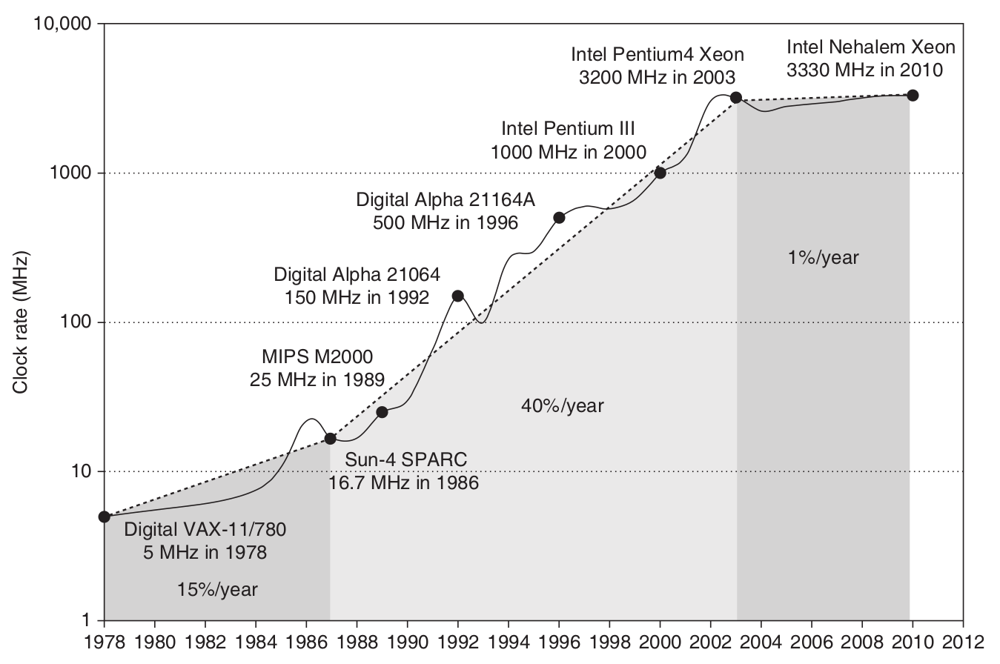
Phénomène du Dark Silicon: pour limiter la dissipation thermique on n'«allume» pas l’ensemble du CPU en même temps.
Source: Hennessy-Patterson
Comment mesurer l’énergie consommée
Wattmètre
combine un capteur d’intensité et de tension
mesure précise mais basse résolution d’échantillonage (peu précis sur des temps petits)

Compteur matériel RAPL
Intel implémente les compteurs RAPL (Running Average Power Limit)
Ne mesure pas vraiment la puissance
Compte le nombre et le type d’instructions exécutées
Utilise un modèle de prédiction de consommation
Résolution élevée d’échantillonage
Ne mesure pas les composants en dehors du CPU/GPU
Comparaison RAPL vs. Wattmètre (Haswell)
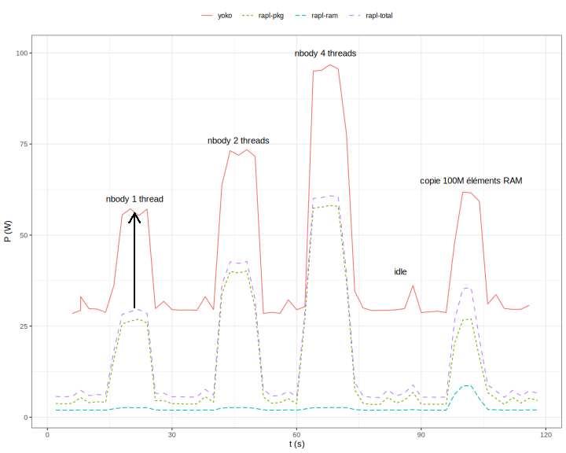
2 compteurs RAPL: pkg (CPU+caches) et ram (mémoire)
prédiction corrélée avec la mesure du wattmètre sauf …
… décalage constant: consommation idle (ventilation, alimentation, carte mère) — environ 30W
Techniques pour réduire la consommation
Meilleure conception technologique (réduire capacitance et courants de fuite)
Gate-clocking: extinction sélective des parties inactives du CPU.
Sleep-modes (P-state and C-state) & DVFS (Dynamic Voltage Frequency Scaling)
Power gating (désactivation d’un cœur complet)
Consolidation de charge et extinction de nœuds inactifs dans un cluster
Optimisations logicielles
Sleep-mode & DVFS
DVFS: change dynamiquement le couple voltage-fréquence du processeur.
Sur une architecture Haswell on a une variation quadratique de P.
Sur Intel: P-state (CPU qui calcule), C-state (Idle et mise en veille d’une partie des composants)
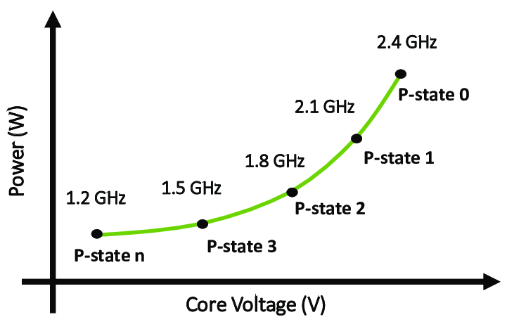
Un gouverneur système choisit le point de fonctionnement optimal.
Par exemple pour un système peu chargé on choisira la fréquence la plus basse.
Race to Idle
En raison de courants de fuite importants et de la consommation statique d’autres composants, une très bonne stratégie en pratique est le Race to Idle (ou course jusqu’au repos).
On fait notre calcul le plus rapidement possible, de manière à pouvoir mettre le système en veille pour limiter la consommation statique.
Dans ce cas, optimiser l’énergie et le temps de calcul sont liés.
Racing and Pacing to Idle, Kim, Ines, Hoffmann, 2005.
Embarqué vs. Serveur
Les politiques énergétiques ne vont pas être les mêmes sur des calculateurs embarqués et des serveurs.
Serveur (très contraint en charge de travail)
On cherche à avoir des fréquences élevées.
Race to Idle est souvent une bonne stratégie.
Embarqué (très contraint en énergie)
Souvent on limite la fréquence pour pouvoir baisser VDD et conserver le budget énergie.
On utilise des stratégies de limitation de puissance fines.
DVFS selon les phases de calcul
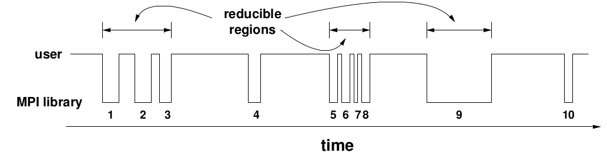
Il peut-être intéressant d’appliquer DVFS aux phases de communications d’un programme.
Si les communications sont synchrones, durant ces phases le CPU travaille peu.
DVFS sur le processeur permet donc d’économiser de l’énergie sans ralentir le programme.
Effet rebond
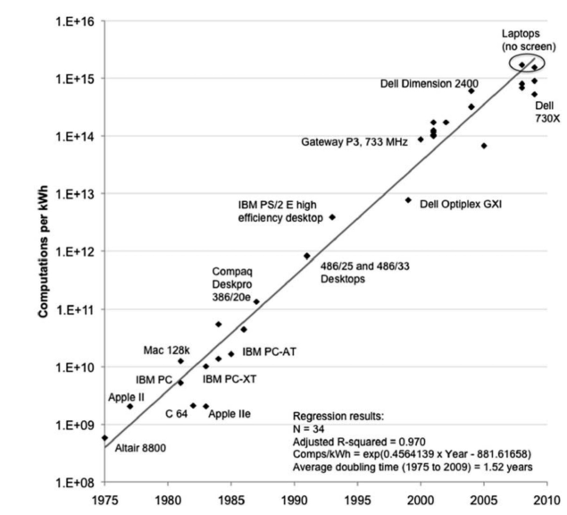
Éfficacité énergétique doublée tous les 1.5 ans
Puissance de calcul doublée tous les 1.5 ans
Nombre de PCs utilisés double tous les trois ans (entre 1980 et 2008).
Optimiser la consommation ne réduit pas l’impact total du calcul. On observe un « effet rebond » où l’efficacité gagnée est utilisée pour calculer plus.
Effet rebond

Malgré d’importantes améliorations de l’efficacité, l’empreinte énergétique totale augmente avec la demande en calcul.
Simulation numérique: vers un calcul sobre ?
Compromis entre justesse du modèle et coût énergétique. Exemple: Réseaux de Neuronnes (Resnet), Green AI, Schwartz 2019.
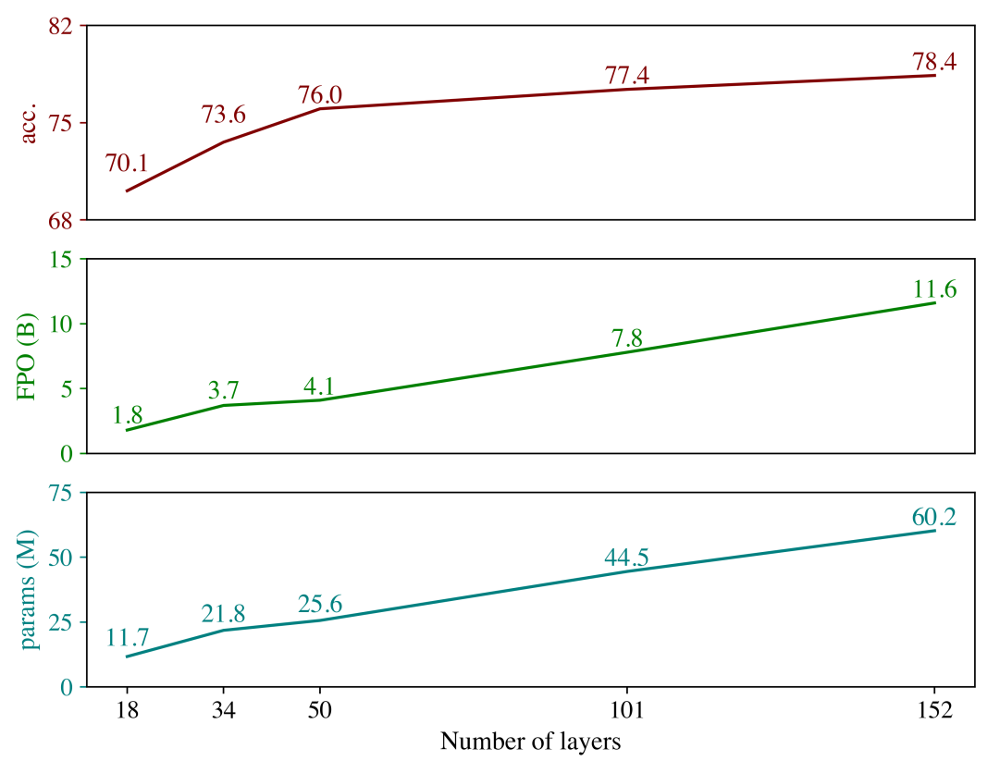
Pour une augmentation linéaire du coût en calcul, on a une augmentation logarithmique de la justesse.
Phénomène similaire observé aussi dans la simulation numérique (Masson & Knutti 2011).
« Loi » des Retours Décroissants ?
Bibliographie
Computer Architecture: A Quantitative Approach, Henessy, Patterson.
Introduction to Power Consumption in Dig. Int. Circuits, Tisserand, ECOFAC 2010.
Design Challenges of Technology Scaling. Borkar. IEEE. 1999.
The future of microprocessors. Borkar et Chien. ACM. 2011.
Dennard Scaling and other Power considerations, S. Gai 2020.
Benefits in Relaxing the Power Capping Constraint, C. Daniele et al. 2017.
Racing and Pacing to Idle: Theoretical and Empirical Analysis of Energy Optimization Heuristics, Kim, Ines, Hoffmann. IEEE 2015.
Adaptive, Transparent Frequency and Voltage Scaling of Communication Phases in MPI Programs, Lim, Freeh, Lowenthal. ACM/IEEE SC 2006.
Green AI, Schwartz et al, 2019.
Speed Scale Depdence of Climate Model Performance in the CMPI3 Ensemble, Masson & Knutti, 2011.
Optimisations de code
Mesure de performance
On ne peut pas optimiser ce que l’on ne peut pas mesurer.
On peut mesurer le temps, l’énergie, la mémoire, la qualité du code.
Souvent énergie et temps de calcul sont liés: race to idle.
Mesurer la performance
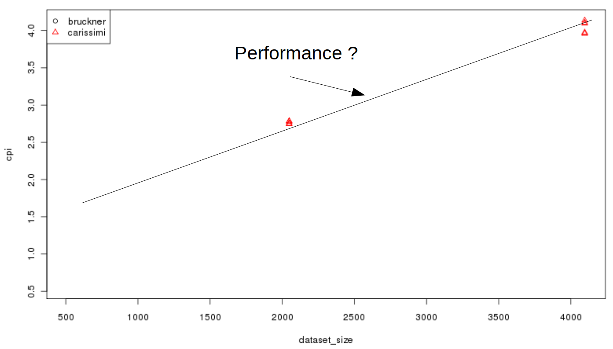
CPI: Cycles par Instruction. Plus les CPI sont bas plus le code est rapide.
Impact de la taille d’un tableau pour un accès mémoire.
Mesurer la performance
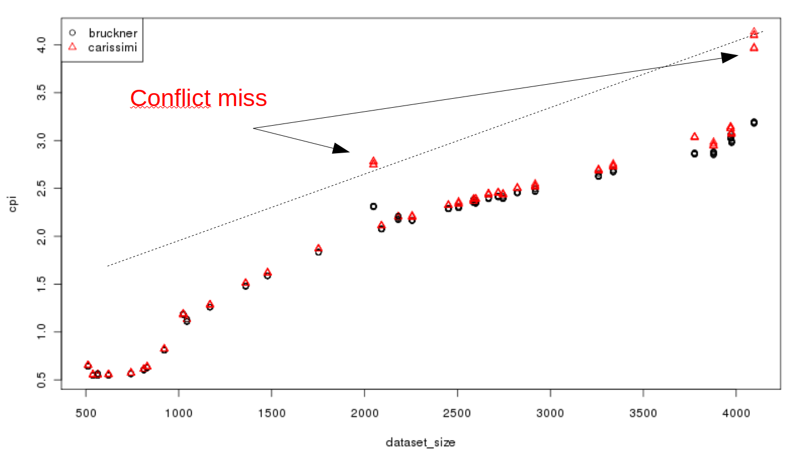
Importance d’explorer différents paramètres en entrée
Exemple
On mesure deux codes:
code 1 : 8.56 secondes
code 2 : 8.94 secondes
Accélération (speedup) (8.94-8.56)/8.94 = 4.2% ?
Attention au bruit de mesure
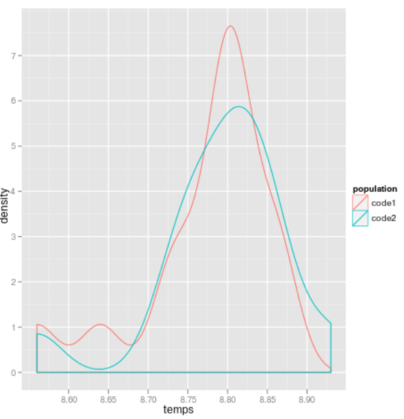
Pas de différence significative avec 30 mesures
Répéter les mesures et étudier leur dispersion.
Bruit de mesure
Importance de prendre en compte le bruit de mesure.
Sources d’indéterminisme:
Hiérarchie mémoire: Caches, TLB, Buffers E/S, Disque dur, swap
Pipeline d’instructions
Entrelacement des threads
DVFS / C-States et P-States
Pour stabiliser les mesures
Exécutez une première fois votre programme pour charger les données dans le buffer E/S (sauf si vous souhaitez en mesurer l’effet).
Utiliser le pinning de processus (évite que les threads soient migrés en cours d’exécution).
Désactivez le DVFS de votre processeur (gouverneur performance)
Évitez de faire tourner d’autres processus et augmentez la priorité du processus mesuré avec
nice -20
Comment mesurer ?
Insertion de sondes directement dans le code. Pour Rust, vous pouvez utiliser le crate
Bencher.
$ cargo bench
Compiling adder v0.0.1 (file:///home/steve/tmp/adder)
Running target/release/adder-91b3e234d4ed382a
running 2 tests
test tests::bench_add_two ... bench: 1 ns/iter (+/- 0)Comment mesurer ?
Utiliser un outil externe. Par exemple pour mesurer des compteurs de performance: RAPL, cache misses, cycles, etc.
De nombreux outils disponibles (Perf, Likwid, MAQAO, PAPI, VTune, …)
Sous Linux, l’outil perf permet d’interroger directement le noyau pour accéder à ces compteurs.
Exemple: pour mesurer les cycles, le nombre d’instructions, ainsi que les cache misses:
perf stat -e cycles,instructions,cache-misses ./programmeHiérarchie Mémoire
Trois niveaux de cache (architectures serveur)
L3 (partagé)
L2 (par cœur)
L1 données et instruction
Latences (Nehalem)
Niveau | Latence |
L1 (hit) | ~4 cycles |
L2 (hit) | ~10 cycles |
L3 (non partagée) | ~40 cycles |
L3 (partagée) | 65-75 cycles |
RAM | > 120 cycles |
SSD | ~300 000 cycles |
Fonctionnement basique d’un Cache
Le CPU demande une adresse mémoire au L1.
Si l’adresse est disponible dans le L1, c’est un hit.
Sinon c’est un miss, le L1 demande au niveau supérieur, ici le L2, de lui transmettre la donnée.
La demande remonte la hiérarchie mémoire jusqu’à ce que la donnée soit trouvée.
Fonctionnement basique d’un Cache
Pour être efficace les données sont déplacées par paquets, les lignes de cache (typiquement 64 octets).
Le bus mémoire détecte les accès linéaires à la mémoire et récupère les données en avance (prefetcher).
for i in 0..n {
a[i] += 1;
}Politique de remplacement
LRU (Last Recently Used)
Les données les plus anciennement utilisées sont remplacées en premier.
Des politiques complexes permettent d’assurer la cohérence des données partagées en L3.
Problème de capacité
for i in 0..n {
for j in 0..n {
a[j][i] += 1; // a[j][i] => a[j*n+i]
}
}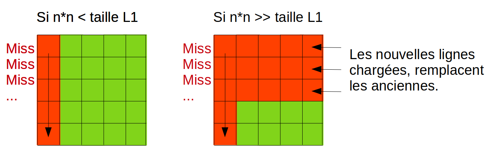
Importance de la localité
Pour optimiser l’accès à la mémoire, on conçoit notre algorithme pour maximiser
Localité spatiale: on accède aux données dans l’ordre des adresses mémoire
Localité temporelle: si des données sont réutilisées, on diminue le temps entre deux réutilisations pour éviter qu’elles soient remplacées entre temps dans le cache.
Un exemple d’optimisation: transformations de boucles
Transformations de boucles: souvent effectuées automatiquement par le compilateur.
Pour que la transformation soit faite, le compilateur doit prouver que la sémantique du code ne change pas.
Dans certains cas, le compilateur n’arrive pas à faire tout seul la transformation.
Loop interchange
for i in 0..n {
for j in 0..n {
a[j][i] = a[j][i]*a[j][i];
}
}Comment optimiser ce code ?
Loop interchange
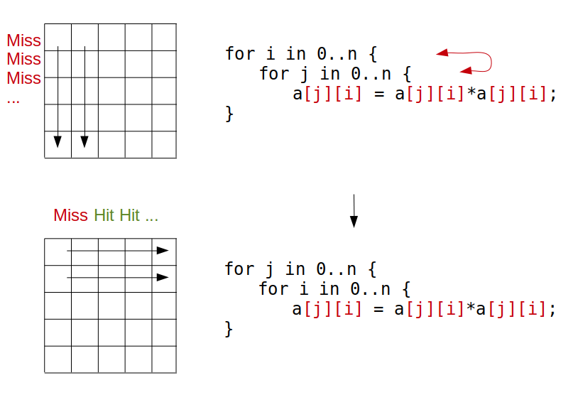
Loop-invariant code motion
for i in 0..n {
for j in 0..n {
a[i][j] = c[i] + b[i][j]
}
}Comment optimiser ce code ?
Loop-invariant code motion
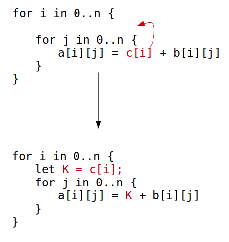
If hoisting
for i in 1..n {
a[i] = a[i] + 1 ;
if i<3 {
b[i] = a[i]*c[i];
} else {
b[i] = a[i-1]*b[i-1];
}
}Comment optimiser ce code ?
If hoisting
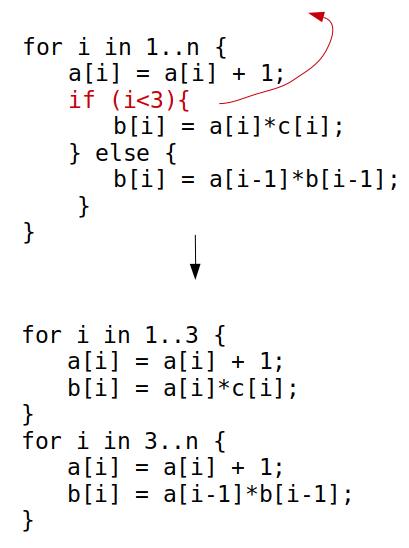
Loop fusion / fission
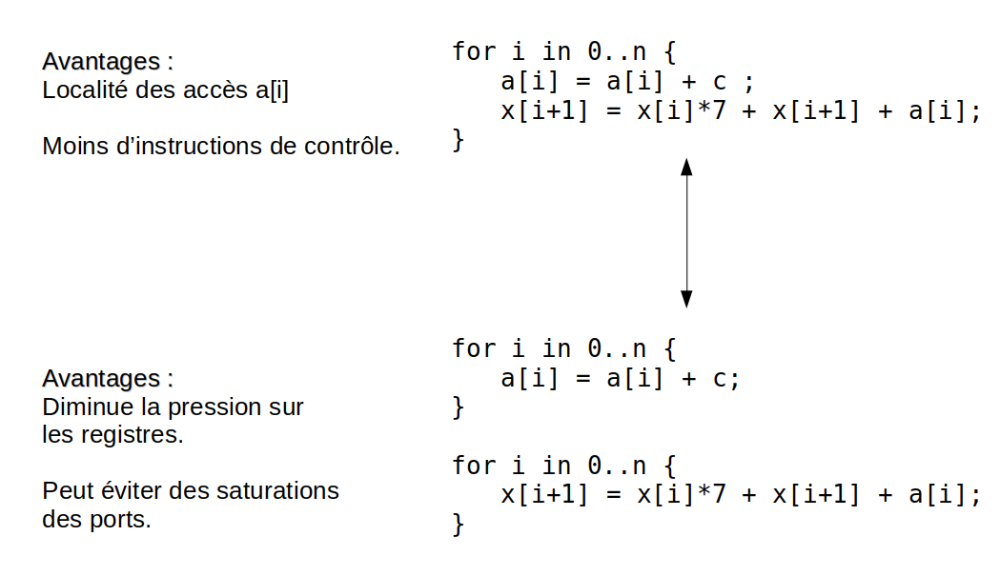
Comment choisir ? Cela dépend de l’architecture. Les compilateurs utilisent des modèles de coût.
Loop peeling
for i in 0..n {
a[i] = a[i] + 2;
}
for i in 2..n {
a[i] = a[i] * 2;
}Comment optimiser ce code ?
Loop peeling
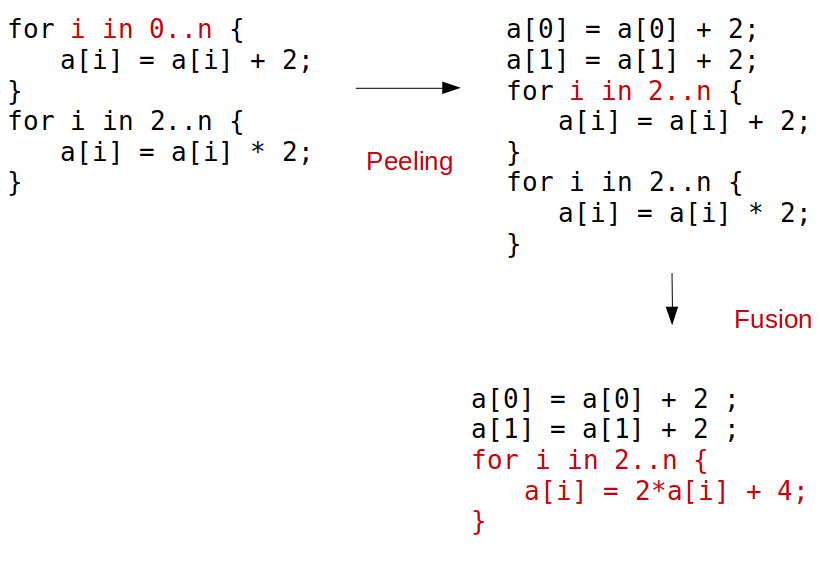
Loop unroll
for i in 0..n {
c[i] += b[i] + a[i];
}Comment optimiser ce code ?
Loop unroll
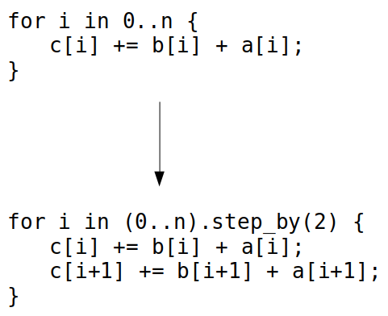
Réduit le surcoût de contrôle.
Parfois, permet de vectoriser le code.
Parfois, fait apparaître des simplifications.
Loop blocking ou tiling
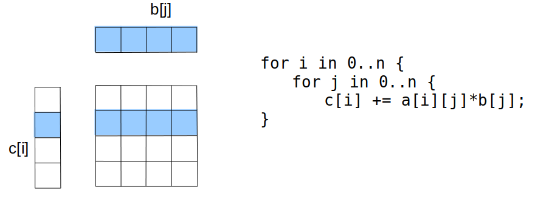
ngrand:b[]ne rentre pas dans le cache.Localité spatiale: ok.
Localité temporelle: problème sur
b[j].Comment optimiser ce code ?
Loop blocking ou tiling
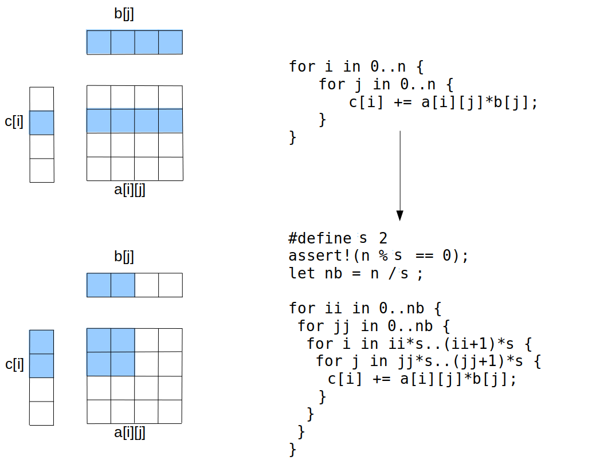
Un mot rapide sur la parallélisation
Les architectures récentes sont multicœurs, pour en tirer parti les programmes peuvent être parallélisés.
Décomposer le travail en parties indépendantes. Chaque partie sera effectuée par un thread dans un cœur différent.
Limiter au maximum les communications et synchronisations entre threads (coûteuses).
Exemple de parallélisation en rust
extern crate rayon;
use rayon::prelude::*;
fn main() {
let mut v = vec![1, 2, 3, 4, 5, 6, 7, 8, 9, 10];
v.par_chunks_mut(3).for_each(|chunk| {
for x in chunk { *x *= 2; }
});
}par_chunksetpar_chunks_mutdécomposent un itérateur en morceaux (chunks) indépendants.la méthode
for_eachva exécuter un traitement parallèle sur chaque morceau.|chunk| { … }est une clôture. C’est une fonction anonyme qui peut capturer les variables de l’environnement où elle est déclarée.